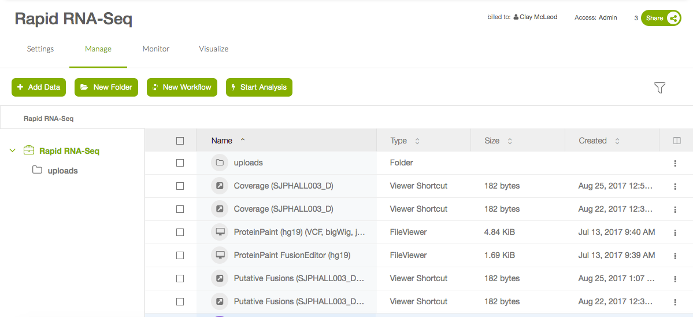

Navigating Results¶
Note
Navigating to the raw results of your runs is the same for all pipelines. This guide will feature the rapid-rnaseq pipeline, but you can follow along for any tool.
Raw result files¶
Navigate to your tool’s description page (for instance, Rapid RNA-Seq’s description page is here). You should see a screen similar to the one in the screenshot below. In the left hand pane, select “View Results Files”.

You should now be in the tool’s workspace with access to files that you uploaded and results files that are generated. How/where the result files are generated are specific to each pipeline. Please refer to your individual pipeline’s documentation on where the output files are kept.
Custom visualization results¶
Navigate to your tool’s description page (for instance, Rapid RNA-Seq’s description page is here). You should see a screen similar to the one in the screenshot below. In the left hand pane, select “Visualize Results”.

You should now be in the tool’s workspace with access to files that you uploaded and results files that are generated. How/where the result files are generated are specific to each pipeline. Please refer to your individual pipeline’s documentation on where the output files are kept.